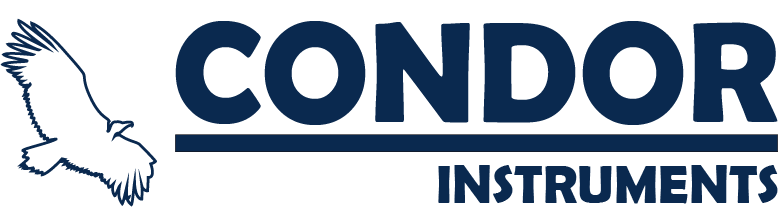
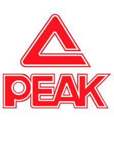
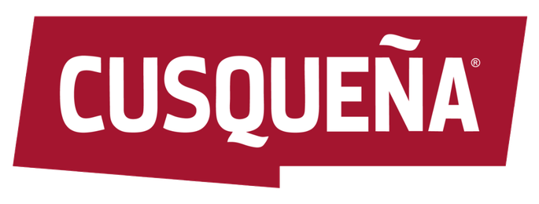
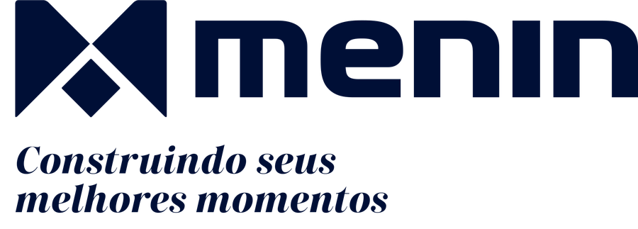

CASE 01 · NASA · ARTEMIS II
Condor Instruments
Campanha da tecnologia brasileira indo para o espaço.
Portfólio · Design e estratégia de marca
Sou o Ítalo Silveira. Nove anos de design, cinco construindo sites. Trabalho em campanhas de marcas grandes e em sites que carregam rápido e não parecem com os de ninguém.
Preparado para o time
01 · Cases
Estratégia e criação dentro de campanhas de grandes marcas, no Brasil e na América do Sul.

Campanha da tecnologia brasileira indo para o espaço.

Patrocinadora oficial de uniformes da delegação brasileira.
Tóquio 2020 e Paris 2024
Participação na campanha da final da Libertadores, Flamengo x Palmeiras.

A 13ª maior construtora do Brasil.
Ranking INTEC 2026, por área construídaMeu papel: estratégia e criação. As logos pertencem aos seus donos. Por contrato, o material completo eu mostro em reunião privada.
02 · Sites
Projetos para o mercado americano. Cada um com layout próprio, feito à mão e testado em velocidade antes de ir ao ar.
Encanamento · Tipografia de cartaz
Marca gigante sobre um vídeo de gota d'água em loop, com os serviços rolando na horizontal.


Elétrica · Revista editorial
Tipografia gigante e índice de serviços, sem cartões. O azul da marca sobre papel quente.


Pintura · Vermelho de marca
Um bloco de cor cheio ao lado de fotografia de obra, com serviços numerados como um índice.


Conceitos de redesign por iniciativa própria, sem vínculo com as empresas mostradas. Notas de velocidade: Lighthouse mobile, teste de laboratório em 13/10/2026, podem variar com rede e aparelho. Há 13 conceitos no total, os outros eu mostro na conversa.
03 · Método FAROL
O Método FAROL é o jeito como eu penso posicionamento de marca para negócio real. Antes de abrir o layout, a pergunta é uma só: por que escolhem este negócio e não o do vizinho?
04 · Como eu trabalho
O negócio e o que faz as pessoas escolherem ele.
Uma ideia de layout que combina com a marca, nunca template.
HTML e CSS limpos, ou um tema WordPress editável.
Todo site passa por teste de velocidade no celular antes de ir ao ar.
Vamos conversar
Trabalho bem por escrito e em equipe. Se fizer sentido, me chame e eu mostro o material completo dos cases em reunião.